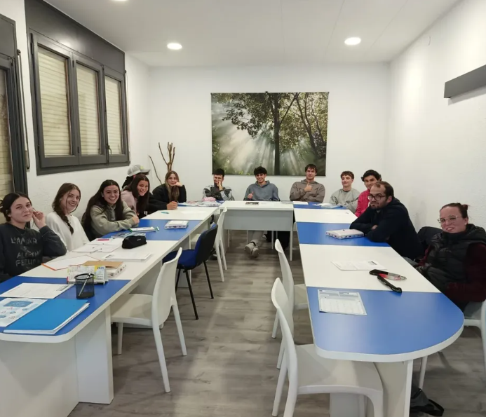
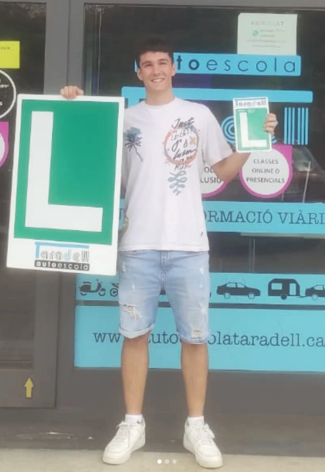
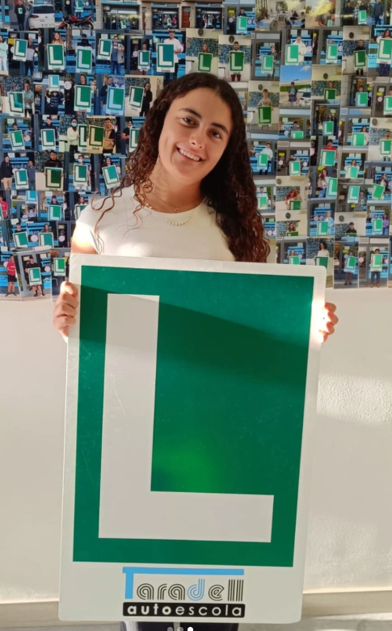
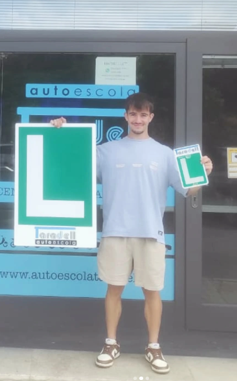
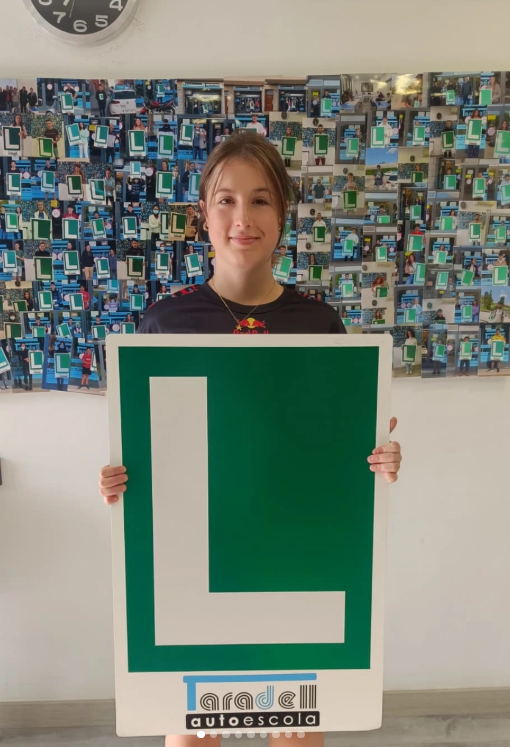
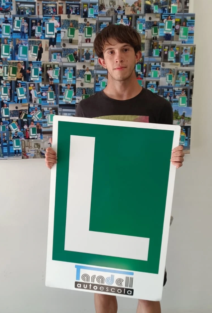
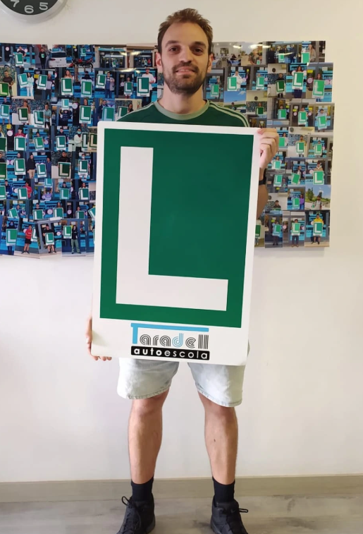

Tu autoescuela en Taradell desde 1983.
Desde 1983
Más de 40 Años en Taradell
Referente histórico formando conductores seguros en la comarca de Osona con trato familiar.
Aula 24h
Única en la Comarca de Osona
Aula informática abierta 24 horas de lunes a domingo con tu tarjeta clave para hacer test DGT.
4.9 ★
Opiniones Verificadas
Los alumnos destacan la cercanía, la flexibilidad de horarios y la comodidad de las prácticas.
Recogida
C/ Sant Sebastià, 37 · Taradell
Prácticas a horas convenidas: ¡dinos dónde estás y te venimos a buscar!
MÉTODO AUTOESCOLA TARADELL
Tres razones para aprender con libertad y cercanía
Combinamos la atención cercana de una autoescuela de toda la vida en Taradell con servicios exclusivos pensados para adaptarse a tus horarios.
PILAR 01
Aula Informática Abierta 24 Horas
Un servicio único en la comarca de Osona. Te entregamos tu tarjeta clave personal para venir a nuestra aula a hacer test DGT a cualquier hora, de lunes a domingo.
- Acceso 24h los 7 días de la semana
- Test oficiales DGT siempre actualizados
- También clases teóricas online en directo
PILAR 02
Flota de Coche y Motos AM, A1 y A2
Aprende cómodo y seguro con nuestros turismos Volkswagen Golf para el Permiso B y nuestras motocicletas para los permisos AM, A1 y A2.
- Packs B de 10 y 20 horas (60 min/clase)
- Packs específicos de pista y circulación
- Preparación real para exámenes en Vic
PILAR 03
Servicio de Recogida a Tu Medida
Organizamos tus clases prácticas en horas convenidas. ¡Dinos dónde estás y te pasamos a buscar! Máxima comodidad para compaginar con estudios o trabajo.
- Recogida en el punto acordado
- Vídeos de mecánica en Instagram
- Atención directa por WhatsApp
CATÁLOGO OFICIAL DGT
Permisos de Conducir y Formación Vial
Desde el Permiso B de coche (Packs 10h y 20h) y los carnets de ciclomotor y moto AM, A1 y A2 hasta clases prácticas de reciclaje en Taradell.
FORMACIÓN Y SERVICIOS DGT
Packs Completos, Aula 24h y Trámites DGT
Más de cuatro décadas en Taradell ofreciendo preparación teórica flexible, packs claros para coche y moto y acceso directo a tus consultas de Tráfico.
Permiso B · Packs 10h y 20h
Elige entre el Pack B 10 Horas o el Pack B 20 Horas con matrícula, teórica 24h, tasas y tramitación DGT, 1 examen teórico, 1 examen de circulación y clases de 60 minutos.
Motos AM, A1 y A2
Packs completos adaptados a cada cilindrada: AM (Pack 2H, desde 15 años), A1 hasta 125cc (Pack 6H, desde 16 años) y A2 >125cc (Pack 4H, desde 18 años).
Aula 24h y Clases Online
Accede con tu tarjeta clave a nuestra aula de informática de lunes a domingo las 24 horas, sigue las clases en directo online y repasa con nuestros vídeos de mecánica en Instagram.
Consultas DGT: Notas y Puntos
Gestionamos tus trámites ante la DGT y te facilitamos el acceso directo para comprobar la nota de tu examen en Vic o consultar tu saldo actual de puntos del carnet.
FLOTA, AULA Y APROBADOS
Flota Moderna y Alumnos con su "L"
Imágenes reales de nuestros vehículos, nuestra aula teórica y nuestros alumnos recién aprobados frente al muro de la L en Taradell.







RESEÑAS EN TARADELL Y OSONA
Valoración de 4,9 ★ en Google
PREGUNTAS FRECUENTES
Resolvemos tus dudas antes de matricularte
¿Cómo funciona el aula de teórica abierta 24 horas?
+
Al matricularte en Autoescola Taradell te entregamos una tarjeta clave personal. Con ella puedes entrar a nuestra aula de informática en C/ Sant Sebastià, 37 a cualquier hora del día y cualquier día de la semana (de lunes a domingo) para hacer test oficiales DGT.
¿En qué consiste el servicio de recogida para las clases prácticas?
+
Las clases prácticas (de 60 minutos cada una) se realizan en horas convenidas. Simplemente dinos dónde estás y te pasamos a buscar según disponibilidad para que aproveches el tiempo al máximo.
¿Qué incluyen los Packs de 10h y 20h del Permiso B?
+
Tanto el Pack B 10 Horas como el Pack B 20 Horas incluyen matrícula, formación teórica (aula 24h y clases online en directo), tasas oficiales y tramitación DGT, 1 examen teórico, 1 examen de circulación y las 10 o 20 clases prácticas de 60 minutos correspondientes.
¿También hacéis clases teóricas online en directo?
+
Sí. Además de las clases presenciales y el aula 24h, impartimos clases teóricas en directo online al mediodía. Puedes consultar los avisos y horarios actualizados en nuestro Instagram @autoescolataradell.cat o por WhatsApp.
¿Cómo puedo consultar los precios actuales y matricularme?
+
Escríbenos directamente por WhatsApp al +34 621 26 28 25 o llámanos al 93 880 03 14 en horario de oficina (11:00–13:00 y 17:15–20:00).
LOCALIZACIÓN Y HORARIOS
Tu autoescuela en C/ Sant Sebastià, 37 (Taradell)
Atención presencial en nuestra oficina de Taradell (Barcelona). Ven a conocernos o escríbenos por WhatsApp sin compromiso.
TARADELL · OSONA (BARCELONA)
Autoescola Taradell
Carrer de Sant Sebastià, 37 · 08552 Taradell, Barcelona
TELÉFONO FIJO
93 880 03 14
CORREO ELECTRÓNICO
autoescolataradell@gmail.com
HORARIOS DE ATENCIÓN
Horarios de Secretaría
Atención presencial en C/ Sant Sebastià, 37 para matrículas, información de tarifas y trámites DGT:
Oficina (Lunes a Viernes)
11:00 - 13:00 | 17:15 - 20:00
Aula Teórica (Lunes a Domingo)
Abierta 24 Horas (Tarjeta Clave)
Clases Prácticas
Horas convenidas (Con recogida)
¿Prefieres escribirnos ahora?
Envíanos un WhatsApp al +34 621 26 28 25 y te informamos sin compromiso.
Envíanos un WhatsApp al +34 621 26 28 25 y te informamos sin compromiso.